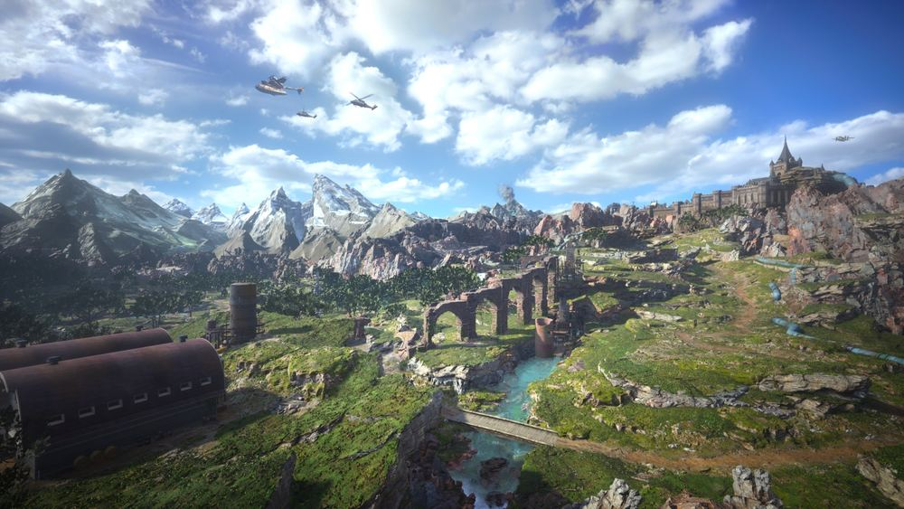

Complément
Région de la Prairie
L'essentiel
- Le 100 % : 6 puits de vie, 6 chasses, 4 enquêtes jusqu'à la protorelique, 2 excavations, 3 autels de Titan.
- Prévois 2 000 gils pour la protorelique.
- À ne pas rater : la matéria Remèdes, derrière l'éolienne du Hameau aux éoliennes.

La région de la Prairie · © SQUARE ENIX
Objectif
Porter la première région du jeu à 100 % : 6 puits de vie, 6 rapports de chasse, 4 rapports d'enquête menant à la protorelique, 2 rapports d'excavation, 3 autels de Titan plus Titan au simulateur, 1 rapport mog, 1 rapport secret (Quetzalcoatl) et 6 quêtes annexes.
La Prairie s'ouvre au chapitre 2 et reste accessible jusqu'au point de non-retour du chapitre 13. C'est ta région d'apprentissage : les niveaux recommandés vont de 17 à 22, sauf une quête à 43 qui n'apparaît qu'au chapitre 12.
⚠️ Il y a un ordre à respecter dans cette région. La quête « Là où souffle le vent » a besoin de deux autres activités terminées avant d'être finissable. Lis la section Conseils et pièges.
Itinéraire
📍 La zone en images : Région de la Prairie — soluce illustrée sur Millenium, en français.
La Prairie n'a pas de chocobo propre à attraper : Piko se capture pendant le chapitre 2 (partie 02). Tu es donc monté dès le début.
L'ordre qui évite les blocages :
- Les tours de transmission, pour révéler la carte et débloquer les activités de Chadley.
- Le rapport mog au sud-est du ranch de Bill, pour ouvrir la Boutique mog tôt.
- Le rapport d'excavation 1 (hameau délabré), qui donne la puce de l'engrenage d'éolienne.
- Le rapport secret (Quetzalcoatl), qui donne la serre de Quetzalcoatl.
- « Là où souffle le vent », maintenant finissable.
- Les puits de vie, les rapports de chasse et le second rapport d'excavation, dans l'ordre que tu veux.
- Les trois autels de Titan, puis Titan au simulateur.
- Les quatre rapports d'enquête, dans l'ordre imposé, jusqu'à la protorelique.
- « Chasseurs de têtes », à partir du chapitre 12 et au niveau 43.
Déroulé pas à pas
Les six puits de vie
Un puits de vie est un gisement de mako à analyser. Le principe est toujours le même : en approchant de la zone, tu vois et tu entends un oiseau de feu appelé hulule-vies. Suis-le, puis interagis avec le gisement de mako et appuie au bon moment.
Les puits de vie débloquent les Études de région, des textes qui retracent l'histoire des lieux.
| # | Nom | Où |
|---|---|---|
| 1 | Puits de vie ombragé | Au nord du ranch de Bill |
| 2 | Puits de vie embourbé | Au sud de l'embarcadère des marécages ; grimpe à la paroi |
| 3 | Puits de vie des marais | Au sud-ouest de l'embarcadère des marécages, au niveau de la station d'épuration ; grimpe aux différentes échelles |
| 4 | Puits de vie des plaines | Au sud-est de Kalm, à une source d'eau en bas d'une grosse paroi rocheuse |
| 5 | Puits de vie au conduit de mako | Au sud de Kalm, à un conduit de mako à l'est de l'atelier de réparation de la quête Hémorragie de mako |
| 6 | Puits de vie en caverne | Au sud-ouest de Kalm, dans une petite caverne en contrebas de l'atelier de réparation de la quête Hémorragie de mako |
Les six rapports de chasse
Un rapport de chasse est un combat contre des espèces rares, avec des objectifs précis à remplir — il ne suffit pas de gagner.
| # | Nom | Niveau | Où | Ennemis | Objectifs |
|---|---|---|---|---|---|
| 1 | Rongeur vorace et roxique | 17 | Au nord du ranch de Bill, au centre d'une structure abandonnée sur une falaise en contrebas | 2 rats venimeux | Fragiliser un ennemi ; infliger le Choc ; ne pas se faire empoisonner |
| 2 | Créature vengeresse | 18 | Au sud-est du ranch de Bill, tout au fond de la zone | 2 Furiodunk | Fragiliser ; Choc ; 1 min 30 |
| 3 | Le gardien du terrier | 18 | À l'ouest de l'embarcadère des marécages | 3 Raskuriax | Fragiliser des ennemis liés au Feu et à la Glace ; Choc ; 1 min 30 |
| 4 | Une fleur frénétique | 18 | À l'est de Kalm, dans un champ de fleurs juste à l'ouest de la Tour de transmission 4 | 3 mandrakes | Empêcher l'ennemi d'utiliser Sieste ; Choc ; 1 min 30 |
| 5 | Un étrange prédateur | 19 | Au sud-ouest de Kalm, près d'une énorme canalisation de mako | 2 Lévrikonptères | Fragiliser ; Choc ; 2 min |
| 6 | Une bête survoltée | 19 | À l'ouest de Kalm, sous la route, à l'ouest d'un arrêt de chariot à chocobo | 2 Loups fulgurants | Fragiliser ; Choc ; 1 min 45 |
Les stratégies, chasse par chasse :
- Chasse 1 — les rats venimeux sont sensibles à la Glace et faciles. Le vrai objectif est de ne pas être empoisonné, et la moindre blessure empoisonne. Reste très mobile — abuse de l'esquive — et change régulièrement de personnage pour empêcher les rats de t'attaquer.
- Chasse 2 — les Furiodunk sont sensibles au Feu et à la Glace. Ils ne peuvent pas être attaqués de front : privilégie l'arrière et les flancs, et méfie-toi de leurs charges.
- Chasse 3 — les Raskuriax sont de type Feu ou Glace, donc respectivement sensibles à la Glace et au Feu. Ils peuvent disparaître momentanément dans le sol : il faut les fragiliser pour les empêcher de se déplacer ainsi.
- Chasse 4 — les mandrakes sont sensibles au Feu et à la Glace. Change régulièrement de personnage pour occuper tous les ennemis à la fois et les empêcher d'utiliser Sieste.
- Chasse 5 — les Lévrikonptères sont sensibles au Feu et à la Glace, et ne peuvent être ni empoisonnés ni pétrifiés. Méfie-toi du corps-à-corps : ils t'immobilisent et infligent de sérieux dégâts avec leurs pattes.
- Chasse 6 — les Loups fulgurants n'ont aucune sensibilité magique, mais leur infliger une altération d'état les fragilise. Ils ne peuvent pas être pétrifiés. Prends Red XIII dans l'équipe : il a le sort Toxine.
Les quatre rapports d'enquête et la protorelique
Les rapports d'enquête se débloquent l'un après l'autre et mènent à la protorelique de la région. Ici, c'est l'histoire de la bande à Beck.
Rapport 1 — Tour de guet côtière. Niveau 17. À l'extrême nord-est de la région, au bord de la côte.
Pour accéder à la protorelique : contourne la tour de guet par la droite pour trouver un bout de grillage endommagé, puis grimpe la paroi à gauche de la porte. Tu tombes sur de vieilles connaissances : la bande à Beck.
Ils sont tous vulnérables au Feu, ce qui les fragilise vite. Méfie-toi de Burt, qui peut te foncer dessus et t'immobiliser.
Rapport 2 — Le poste de contrôle. Niveau 18. Au sud de Kalm, dans une structure métallique près d'un conduit de mako ; un arrêt de chariot chocobo se trouve sur la route au nord-ouest.
C'est une séquence d'infiltration : il faut se servir des containers pour se cacher des brigands et rejoindre la salle du rez-de-chaussée.
Tu peux te faire repérer 2 fois sans conséquence si tu te caches assez vite — mais la 3e fois fait fuir les brigands et il faut tout recommencer.
L'itinéraire le plus simple : cache-toi derrière le petit container du milieu pour éviter le regard du brigand de droite, puis faufile-toi entre les rangées de containers en évitant les deux brigands près du gril et sur les escaliers.
Une fois à l'abri dans la pièce du bas : monte sur la structure aux prises jaunes et emprunte l'échelle pour monter sur le toit. Tu surprends les brigands et affrontes un Butch renforcé et un Bec-aiguille. Le monstre est sensible au Feu et au Vent et absorbe la Foudre ; Butch n'aime pas le Feu.
Rapport 3 — L'usine abandonnée. Niveau 18. À l'ouest de Kalm, dans une usine sous la route ; arrêt de chariot chocobo juste au sud.
Fais le tour de l'usine par la droite pour trouver l'entrée. Les brigands tentent de t'embrouiller : il faut deviner derrière qui se cache la protorelique.
C'est Burke — et tu peux le déduire grâce à l'effet de brillance qui émane de lui.
Ils prennent la fuite et te laissent des brigands de bas étage, vulnérables au Feu. Ensuite, sers-toi du flair de ton chocobo pour retrouver la clé du repaire : fais-lui renifler la pelle au fond de la salle et suis la piste olfactive pour déterrer la clé du repaire de Beck un peu plus loin.
Rapport 4 — Le repaire des brigands. Niveau 19. Au nord de Kalm, au bord de la falaise.
Pour trouver l'entrée : part de l'abri antiaérien et longe la montagne vers le nord jusqu'à la porte d'entrée. Continue le long de la gorge jusqu'au repaire sur la falaise, et passe par l'une des entrées.
Les brigands font semblant d'être morts pour t'embrouiller : actionne le mécanisme à droite pour faire tomber la caisse sur eux.
Après négociations, tu affrontes toute la bande de Beck et leur Faucheur modifié. Les hommes sont sensibles au Feu, la machine est vulnérable à la Foudre. Prends une équipe à distance — Aerith et Barret — et concentre-toi sur les brigands avant de détruire les bras du Faucheur modifié.
Le combat terminé, il faut donner 2 000 gils aux brigands en échange de la protorelique. Tu peux dire non si tu n'as pas la somme, mais tu n'auras pas d'autre choix que de payer pour l'obtenir. Garde 2 000 gils de côté.
Les deux rapports d'excavation
Un rapport d'excavation demande de déterrer un nombre précis de trésors au flair de ton chocobo, dans une zone délimitée. L'intérêt principal : les Puces de synthèse de la République, qui débloquent des recettes — et parfois des objets clés de quêtes.
Rapport 1 — Hameau délabré. À l'ouest du ranch de Bill, près de l'entrée de la zone aride. 3 trésors à déterrer.
Recettes obtenues : Protège-bras en cuivre +, Amulette sylvestre +, Coussin, et Engrenage d'éolienne — indispensable pour la quête « Là où souffle le vent ».
Rapport 2 — Décharge de conduit de mako. Au nord de la carte, juste au sud du Plateau fleuri de la quête Des fleurs sur la colline. 3 trésors à déterrer.
Recettes obtenues : Bracelet en os +, Armille en cuir épais +, Gilet pare-balles type II, Poignet de force accrue, Boucle d'oreille de la fraternité.
Les trois autels de Titan
Un rapport Esper consiste à trouver les autels d'une invocation. Chaque autel trouvé fait deux choses : il affaiblit l'Esper dans le simulateur de combat et il renforce la matéria que tu recevras en le battant.
Le principe de repérage : une pierre guide jaune est à briser pour qu'elle indique le chemin. Suis la lueur.
L'analyse est un mini-jeu de rythme : des touches apparaissent, mémorise l'ordre et le rythme, et reproduis-les.
| Autel | Où |
|---|---|
| Autel de Titan α | Depuis la Tour d'activation 2, à l'est du ranch de Bill sur la côte, avance vers le nord. Brise la pierre guide et suis la lueur en contrebas jusqu'à une grande caverne |
| Autel de Titan β | Avance dans les marécages vers le sud-ouest. Brise la pierre guide, monte la paroi à proximité, et traverse les remparts vers l'ouest |
| Autel de Titan γ | Avance dans les montagnes au sud de la Tour d'activation 6. Brise la pierre guide et suis la lueur jusqu'à une grande caverne |
Battre Titan se fait dans le simulateur de combat de Chadley, programme Esper : Titan. Tu choisis ton équipe et la difficulté selon le nombre d'autels trouvés — et tu es libre de l'affronter à la difficulté la plus élevée même si tu as fait les trois autels.
Titan n'est franchement pas difficile avec une bonne équipe. Aerith, Barret et Cloud fonctionnent très bien, pour l'attaquer majoritairement à distance.
- Il est sensible au Vent : équipe cette matéria.
- Annihilation est excellente ici : elle détruit sa Barrière terrestre, ce qui prolonge son état de Fragilité.
- ⚠️ La vaste majorité de ses attaques ne peuvent pas être bloquées — elles sont alors marquées d'un triangle rouge. Mais tu peux le fragiliser si tu parviens à les esquiver, en te déplaçant ou à l'esquive.
Le rapport mog
Au sud-est du ranch de Bill, une maison de mog en forme de champignon.
Entre : un Mog te demande de ramener les 5 minimogs à la maison, dans le jeu Minimogs à malice. Pousse-les jusqu'à la maison en esquivant leurs attaques. Trois coups reçus et tu perds la partie.
Les 5 minimogs rentrés, la Boutique mog ouvre, en rang 1.
Ce qu'on peut y acheter contre des médailles mog :
| Objet | Prix |
|---|---|
| Éther ×1 | 1 médaille |
| Rubis ×9 | 10 médailles |
| Émeraude ×7 | 10 médailles |
| Pendantéria PV augmentés ×1 | 6 médailles |
| Codex Combat à l'épée I ×1 | 6 médailles |
| Codex Techniques d'arts martiaux I ×1 | 6 médailles |
Où trouver des médailles mog : en brisant des caisses Shinra sur les tours de transmission et dans les caches aux trésors. C'est une information qui vaut pour tout le jeu.
Le rapport secret : Quetzalcoatl
Niveau recommandé : 22. Au sud-ouest de Kalm, et plus précisément au sud-est de l'atelier de réparation de la quête Hémorragie de mako.
Le Quetzalcoatl est sensible à la Glace. Il ne peut pas être pétrifié et résiste à Lenteur, Poison, Stop et Transmutation.
La méthode la plus simple : multiplie les sorts de Glace pour le mettre en état de Choc tout en évitant ses attaques physiques et élémentaires. Invoque Shiva, elle aide énormément.
Récompense capitale : une Serre de Quetzalcoatl, nécessaire pour synthétiser l'engrenage d'éolienne de la quête « Là où souffle le vent ».
Les six quêtes annexes
La plupart s'obtiennent au chapitre 2, une au chapitre 12 — et toutes peuvent être faites à n'importe quel moment, y compris après le scénario principal.
Des fleurs sur la colline. Niveau 17. Chloé, au ranch de Bill.
Elle te demande de cueillir des fleurs au Plateau fleuri, au nord-ouest de Kalm. Suis le chemin jusqu'à une grande zone fleurie remplie de Mandragores — il y en a une douzaine : privilégie les attaques de zone et méfie-toi des ennemis qui tourbillonnent vers toi.
Ensuite, sers-toi du croquis de Chloé pour cueillir trois types de fleurs : blanches, jaunes et rouges. Rapporte-les à Chloé au ranch pour fabriquer des couronnes de fleurs.
Récompense : un Codex Secrets de la planète et de l'affinité avec Aerith.
La carte rare perdue. Aucun niveau recommandé. Tableau d'annonces de Kalm.
- Parle au patron du bar juste derrière le tableau et gagne une partie de Queen's Blood contre lui.
- Il t'envoie chez Virgil, assis à une table dans le petit jardin à droite du clocher. Pas difficile — mais il a échangé la carte de Val avec un certain Thorin.
- Thorin tient une boutique de cartes à l'extérieur de Kalm, au bord de la falaise au nord-est. Il a quelques cartes gênantes : un deck bien conçu suffit, par exemple avec les cartes du booster Mauvaise graine.
- La carte Chocobo & mog en main, retourne la remettre à Val à la taverne. Il décide finalement de te la laisser et t'offre un verre.
Récompense : la carte Chocobo & mog et de l'affinité avec Tifa.
Hémorragie de mako. Niveau 18. Tableau d'annonces de Kalm, puis le maire sur la place centrale.
- Va au sud-ouest de Kalm prendre des nouvelles de la mercenaire engagée. Grimpe au niveau des rochers au nord : tu trouves l'atelier et Kyrié, la « mercenaire ».
- Elle a besoin de matériaux supplémentaires, à récupérer dans les tas de ferraille des alentours — avec quelques rats toxiques sans danger. Tu es davantage récompensé si tu lui apportes le maximum.
- Suis-la jusqu'au conduit percé. Vous êtes attaqués par une Oronge venimeuse, sensible au Feu. Ses spores infligent Poison, Silence et Sommeil : privilégie les attaques à distance.
- Le conduit réparé, 2 oronges venimeuses attaquent.
- Retourne voir le maire à Kalm.
Récompense : 3 000 gils, de l'expérience, et de l'affinité avec Barret.
La terreur du bétail. Niveau 18. Tableau d'annonces de Kalm, puis Oliver à la ferme de l'ami de Broden, à l'est de Kalm.
- Approche-toi de la clôture endommagée et utilise le flair de ton chocobo : maintiens la flèche directionnelle du haut pour dénicher l'odeur, puis suis la piste.
- La piste mène à une plage à l'est de la ferme, où t'attend un Dévoreur immaculé.
⚠️ Ce monstre n'est sensible à aucune magie et ne peut pas être pétrifié — mais lui infliger des dégâts et bloquer ses attaques le met en Fragilité. C'est un ennemi coriace aux attaques très puissantes, particulièrement Hurlement déflagrateur, qui projette des boules de feu dans une large zone autour de lui : éloigne-toi dès que tu le vois le lancer. Privilégie une équipe à distance — Aerith et Barret.
Récompense : un protège-bras hibou, de l'expérience, et de l'affinité avec Red XIII.
Là où souffle le vent. Niveau 22. Tableau d'annonces de Kalm, ou directement en parlant à Broden à l'auberge.
C'est la quête à préparer. Broden t'envoie parler à Mildred au Hameau aux éoliennes, à l'est de Kalm — au bord d'une falaise, au nord de la ferme d'Oliver.
Pour réparer l'éolienne, il faut synthétiser un engrenage, et donc deux choses obtenues ailleurs :
- la puce de l'engrenage d'éolienne, du Rapport d'excavation 1 : hameau délabré ;
- une Serre de Quetzalcoatl, du Rapport secret : un ancien volatile.
La pièce synthétisée, apporte-la à Mildred et elle met l'éolienne en marche.
⏳ Et surtout : ramasse la matéria Remèdes tombée derrière l'éolienne avant de retourner voir Broden. C'est l'objet le plus facile à rater de toute la région.
Récompense : un Foulard siffle-vent, de l'expérience, et de l'affinité avec Red XIII.
Chasseurs de têtes. Niveau 43. Tableau d'annonces de Kalm, à partir du chapitre 12.
Parle à Beck à l'entrée de Kalm, réponds à ses questions, et il t'envoie te débarrasser de « créatures gênantes » sur la route qui mène à Midgar, à l'ouest de Kalm.
Sur place, trois vagues d'adversaires :
- des Loups de Kalm, sensibles à la Glace ;
- des Brigands, vulnérables aux compétences de Feu — ils résistent à la magie, donc privilégie des compétences comme Enchaînement enflammé ou Impulsion enflammée. Tu peux aussi les mettre immédiatement en Choc en les frappant pendant Piégeage.
- des Motards diaboliques, faibles face à la Foudre. Ils utilisent des Stimulants et des Revigorants qui leur rendent des PV et les boostent, et ils peuvent t'immobiliser avec Chaîne diabolique. Fais monter tes jauges d'ATB pour les fragiliser vite aux sorts de Foudre et débarrasse-t'en dès le premier état de Choc, en utilisant par exemple les Enseignements secrets de Tifa pour monter le multiplicateur.
Récompense : un Codex Combat à l'arme à feu VI pour Barret, et de l'affinité avec Barret.
Quêtes et lieux
Récapitulatif des activités de la Prairie
| Type | Nombre | Détail |
|---|---|---|
| Puits de vie | 6 | Débloquent les Études de région |
| Rapports de chasse | 6 | Niveaux 17 à 19 |
| Rapports d'enquête | 4 | Mènent à la protorelique des brigands |
| Rapports d'excavation | 2 | 3 trésors chacun |
| Autels Esper | 3 | Titan |
| Rapport mog | 1 | Boutique mog de rang 1 |
| Rapport secret | 1 | Quetzalcoatl, niveau 22 |
| Quêtes annexes | 6 | Niveaux 17 à 22, plus une à 43 |
| Rapport chocobo | — | Piko se capture au chapitre 2, pas dans un rapport |
Les lieux de la région
| Lieu | Ce qu'on y trouve |
|---|---|
| Kalm | Tableau d'annonces (4 quêtes), taverne (Val et le patron du bar), place centrale (le maire), clocher (Virgil dans le jardin à droite), auberge (Broden), entrée (Beck au chapitre 12) |
| Ranch de Bill | Chloé (Des fleurs sur la colline) ; Rapport d'excavation 1 à l'ouest ; rapport mog au sud-est ; puits de vie 1 et chasse 1 au nord ; chasse 2 au sud-est |
| Embarcadère des marécages | Puits de vie 2 au sud ; puits de vie 3 au sud-ouest (station d'épuration) ; chasse 3 à l'ouest |
| Plateau fleuri (nord-ouest de Kalm) | Quête Des fleurs sur la colline ; Rapport d'excavation 2 juste au sud |
| Atelier de réparation (sud-ouest de Kalm) | Quête Hémorragie de mako ; puits de vie 5 à l'est ; puits de vie 6 en contrebas ; Quetzalcoatl au sud-est |
| Hameau aux éoliennes (est de Kalm) | Mildred ; matéria Remèdes derrière l'éolienne |
| Ferme d'Oliver (est de Kalm) | Quête La terreur du bétail |
| Boutique de cartes de Thorin | Au bord de la falaise au nord-est de Kalm |
| Tour de guet côtière (extrême nord-est) | Rapport d'enquête 1 |
| Repaire de Beck (nord de Kalm, falaise) | Rapport d'enquête 4 ; entrée depuis l'abri antiaérien, le long de la montagne vers le nord |
| Caches aux trésors | Moulin à grains abandonné et Viaduc embroussaillé (ouvertes au chapitre 2 — voir partie 02) |
| Tours de transmission | Révèlent la carte ; caisses Shinra au sommet = médailles mog |
Les tours sont appelées « tours de transmission » et « tours d'activation » par la même source. Le guide retient tour de transmission, la forme la plus fréquente. ⚠️ à vérifier en jeu.
Butin exhaustif
| Nom exact | Type | Où / comment l'obtenir | Utilité |
|---|---|---|---|
| Matéria Titan | Matéria d'invocation rouge | Première tour de transmission de la Prairie (chapitre 2) | Invoque Titan |
| Matéria Titan renforcée | Matéria d'invocation rouge | Battre Titan au simulateur ; plus puissante selon le nombre d'autels trouvés | Invocation améliorée |
| Protorelique des brigands | Protorelique | Rapport d'enquête 4, puis 2 000 gils à la bande de Beck | Une des sept protoreliques |
| Serre de Quetzalcoatl | Matériau | Rapport secret : vaincre le Quetzalcoatl | Nécessaire à l'engrenage d'éolienne |
| Clé du repaire de Beck | Objet clé | Rapport d'enquête 3 : flair du chocobo sur la pelle, puis déterrer | Ouvre le rapport d'enquête 4 |
| Puce : Protège-bras en cuivre + | Recette | Rapport d'excavation 1 | Synthèse |
| Puce : Amulette sylvestre + | Recette | Rapport d'excavation 1 | Synthèse |
| Puce : Coussin | Recette | Rapport d'excavation 1 | Synthèse |
| Puce : Engrenage d'éolienne | Recette | Rapport d'excavation 1 | Obligatoire pour « Là où souffle le vent » |
| Puce : Bracelet en os + | Recette | Rapport d'excavation 2 | Synthèse |
| Puce : Armille en cuir épais + | Recette | Rapport d'excavation 2 | Synthèse |
| Puce : Gilet pare-balles type II | Recette | Rapport d'excavation 2 | Synthèse |
| Puce : Poignet de force accrue | Recette | Rapport d'excavation 2 | Synthèse |
| Puce : Boucle d'oreille de la fraternité | Recette | Rapport d'excavation 2 | Synthèse |
| Matéria Remèdes | Matéria verte magie | Derrière l'éolienne du Hameau aux éoliennes, avant de retourner voir Broden | Sérum et soins d'altérations |
| Codex Secrets de la planète | Codex | Quête Des fleurs sur la colline | Points de codex |
| Carte Chocobo & mog | Carte | Quête La carte rare perdue | Carte de Queen's Blood |
| 3 000 gils | Argent | Quête Hémorragie de mako | — |
| Protège-bras hibou | Accessoire | Quête La terreur du bétail | effet exact à vérifier en jeu |
| Foulard siffle-vent | Accessoire | Quête Là où souffle le vent ; un second exemplaire se trouve au chapitre 13 (partie 13) | Booste l'ATB |
| Codex Combat à l'arme à feu VI | Codex Barret | Quête Chasseurs de têtes (chapitre 12, niveau 43) | Points de codex pour Barret |
| Éther | Consommable | Boutique mog, 1 médaille | Restaure des PM |
| Rubis ×9 | Pierre précieuse | Boutique mog, 10 médailles | Synthèse / vente |
| Émeraude ×7 | Pierre précieuse | Boutique mog, 10 médailles | Synthèse / vente |
| Pendantéria PV augmentés | Accessoire à matéria | Boutique mog, 6 médailles | Accessoire avec emplacement |
| Codex Combat à l'épée I | Codex Cloud | Boutique mog, 6 médailles | Points de codex |
| Codex Techniques d'arts martiaux I | Codex Tifa | Boutique mog, 6 médailles | Points de codex |
| Études de région | Textes | Les 6 puits de vie | Histoire des lieux |
| Médaille mog | Objet d'échange | Caisses Shinra des tours de transmission et caches aux trésors | Monnaie de la Boutique mog |
Conseils et pièges
L'ordre à respecter
« Là où souffle le vent » ne peut pas être terminée sans deux autres activités. Il te faut :
- la puce de l'engrenage d'éolienne → Rapport d'excavation 1 : hameau délabré ;
- une Serre de Quetzalcoatl → Rapport secret : un ancien volatile, niveau 22.
Fais ces deux-là d'abord, sinon tu feras l'aller-retour pour rien.
Les ennemis de la région
| Ennemi | Point faible | À savoir |
|---|---|---|
| Rat venimeux | Glace | La moindre blessure empoisonne |
| Furiodunk | Feu, Glace | Ne peut pas être attaqué de front |
| Raskuriax | Glace (si Feu) / Feu (si Glace) | Disparaît dans le sol : le fragiliser l'en empêche |
| Mandrake | Feu, Glace | Sieste : occupe-les tous en changeant de personnage |
| Lévrikonptère | Feu, Glace | Ni Poison ni Pierre. Immobilise au corps-à-corps |
| Loup fulgurant | — (aucune magie) | Une altération d'état le fragilise ; Red XIII a Toxine. Pas de Pierre |
| Mandragore | — | Une douzaine au Plateau fleuri : attaques de zone |
| Oronge venimeuse | Feu | Spores → Poison, Silence, Sommeil : reste à distance |
| Dévoreur immaculé | — (aucune magie) | Dégâts + blocage de ses attaques → Fragilité. Hurlement déflagrateur : éloigne-toi |
| Bec-aiguille | Feu, Vent | Absorbe la Foudre |
| Brigand | Feu (compétences) | Résiste à la magie : Enchaînement enflammé, Impulsion enflammée. Le frapper pendant Piégeage le choque immédiatement |
| Motard diabolique | Foudre | Stimulants et Revigorants le soignent ; Chaîne diabolique immobilise |
| Faucheur modifié | Foudre | Détruis ses bras ; fais le ménage parmi les brigands d'abord |
| Quetzalcoatl | Glace | Pas de Pierre ; résiste à Lenteur, Poison, Stop, Transmutation. Shiva |
| Titan (Esper) | Vent | Annihilation détruit sa Barrière terrestre ; la plupart de ses attaques sont imparables (triangle rouge) mais esquivables, ce qui le fragilise |
Le reste
- Garde 2 000 gils avant le rapport d'enquête 4 : la protorelique s'achète.
- Ne rate pas la matéria Remèdes derrière l'éolienne. Elle tombe pendant une cinématique et le jeu ne te dit pas de la ramasser.
- Les tours de transmission sont ta source de médailles mog. Les caisses Shinra au sommet en contiennent, et les caches aux trésors aussi. Sans médailles, la Boutique mog ne sert à rien.
- Pour les rapports de chasse, les objectifs comptent autant que la victoire. Lis-les avant de lancer le combat : « ne pas se faire empoisonner » et « empêcher Sieste » changent complètement la façon de jouer.
- Change régulièrement de personnage. C'est le conseil qui revient sur quatre des six chasses : ça occupe tous les ennemis à la fois et ça les empêche de lancer leurs techniques gênantes.
- Feu et Glace couvrent presque toute la région. Un Red XIII avec Toxine règle les Loups fulgurants, et une équipe Aerith / Barret à distance règle les deux monstres coriaces (Dévoreur immaculé, Faucheur modifié).
- Tu peux affronter Titan à la difficulté maximale même après avoir fait les trois autels. Les autels affaiblissent l'Esper et renforcent sa matéria ; rien ne t'oblige à choisir la version facile.
Alertes
- ⚠️ Ordre obligatoire : « Là où souffle le vent » exige le Rapport d'excavation 1 (puce de l'engrenage) et le Rapport secret (Serre de Quetzalcoatl).
- ⚠️ Prévois 2 000 gils pour acheter la protorelique à la fin du rapport d'enquête 4.
- ⏳ Manquable : la matéria Remèdes, derrière l'éolienne du Hameau aux éoliennes. À ramasser avant de retourner voir Broden.
- ⚠️ Rapport d'enquête 2 : à la 3e détection, les brigands fuient et il faut tout recommencer.
- ⚠️ Rapport mog : 3 coups reçus et la partie de Minimogs à malice est perdue.
- ⚠️ Chasse 1 : la moindre blessure t'empoisonne, et ne pas être empoisonné est un objectif.
- ⚠️ « Chasseurs de têtes » demande le niveau 43 et n'apparaît qu'au chapitre 12. Ne la tente pas trop tôt.
- ⚠️ Le Bec-aiguille du rapport d'enquête 2 absorbe la Foudre : ne lui en lance pas.
- ⚠️ Noms à vérifier en jeu : « tour de transmission » contre « tour d'activation », et l'effet exact du protège-bras hibou.
Check-list
Puits de vie
- Puits de vie ombragé (nord du ranch de Bill)
- Puits de vie embourbé (sud de l'embarcadère)
- Puits de vie des marais (station d'épuration)
- Puits de vie des plaines (sud-est de Kalm)
- Puits de vie au conduit de mako (sud de Kalm)
- Puits de vie en caverne (sud-ouest de Kalm)
Rapports de chasse
- 1 — Rongeur vorace et roxique (sans être empoisonné)
- 2 — Créature vengeresse
- 3 — Le gardien du terrier
- 4 — Une fleur frénétique (sans Sieste)
- 5 — Un étrange prédateur
- 6 — Une bête survoltée
Rapports d'enquête
- 1 — Tour de guet côtière (bande à Beck)
- 2 — Le poste de contrôle (infiltration)
- 3 — L'usine abandonnée (Burke, puis la clé au flair)
- 4 — Le repaire des brigands (+ 2 000 gils)
- Protorelique des brigands obtenue
Rapports d'excavation
- 1 — Hameau délabré (3 trésors) → puce de l'engrenage d'éolienne
- 2 — Décharge de conduit de mako (3 trésors)
Esper
- Autel de Titan α
- Autel de Titan β
- Autel de Titan γ
- Titan vaincu au simulateur, matéria renforcée obtenue
Mog et secret
- Minimogs à malice réussi, Boutique mog de rang 1 ouverte
- Quetzalcoatl vaincu, Serre de Quetzalcoatl obtenue
Quêtes annexes
- Des fleurs sur la colline (affinité Aerith)
- La carte rare perdue (affinité Tifa)
- Hémorragie de mako (affinité Barret)
- La terreur du bétail (affinité Red XIII)
- Là où souffle le vent (affinité Red XIII) + matéria Remèdes
- Chasseurs de têtes (chapitre 12, niveau 43, affinité Barret)
Divers
- Toutes les tours de transmission activées
- Caisses Shinra des tours brisées (médailles mog)
- Caches aux trésors Moulin à grains abandonné et Viaduc embroussaillé ouvertes
- Boutique mog dévalisée selon tes médailles